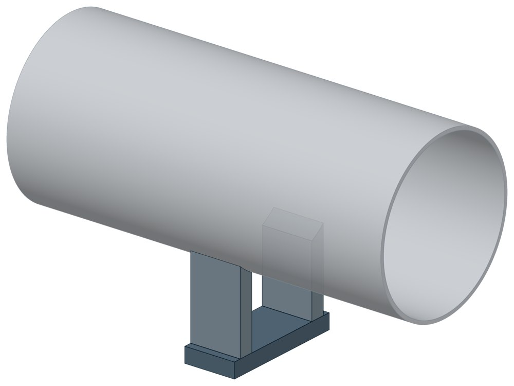

Опора приварная скользящая и неподвижная ОСТ 34-10-616-93
ОСТ 34-10-616-93. Dн 57–1620 мм, вертикальная нагрузка — до 330 кН, масса 0,8–228 кг.

- Диаметр трубы Dн
- 57–1620 мм
- Документ
- ОСТ 34-10-616-93
- Исполнений
- 150
- Вертикальная нагрузка
- до 330 кН
- Масса
- 0,8–228 кг
- 3D-модели
- у всех исполнений (условные: общий вид по габаритам)
Таблица исполнений ОСТ 34-10-616-93
| Обозначение | Код ПРОМБУРГ | Dнмм | Вертикальная нагрузкакН | Длина опорымм | Массакг | 3D |
|---|---|---|---|---|---|---|
| 57У-01 ОСТ 34-10-616-93 | ПБ-34616-0057-1 | 57 | 1 | 100 | 0,8 | 3D |
| 57К-02 ОСТ 34-10-616-93 | ПБ-34616-0057-2 | 57 | 1 | 100 | 0,8 | 3D |
| 76У-03 ОСТ 34-10-616-93 | ПБ-34616-0076-1 | 76 | 1,5 | 100 | 1 | 3D |
| 76К-04 ОСТ 34-10-616-93 | ПБ-34616-0076-2 | 76 | 1,5 | 100 | 1 | 3D |
| 89У-05 ОСТ 34-10-616-93 | ПБ-34616-0089-1 | 89 | 2 | 100 | 1 | 3D |
| 89К-06 ОСТ 34-10-616-93 | ПБ-34616-0089-2 | 89 | 2 | 100 | 1 | 3D |
| 108У-07 ОСТ 34-10-616-93 | ПБ-34616-0108-1 | 108 | 3 | 100 | 1,8 | 3D |
| 108К-08 ОСТ 34-10-616-93 | ПБ-34616-0108-2 | 108 | 3 | 100 | 1,8 | 3D |
| 108У-09 ОСТ 34-10-616-93 | ПБ-34616-0108-3 | 108 | 3 | 100 | 2,4 | 3D |
| 108К-10 ОСТ 34-10-616-93 | ПБ-34616-0108-4 | 108 | 3 | 100 | 2,4 | 3D |
| 108У-11 ОСТ 34-10-616-93 | ПБ-34616-0108-5 | 108 | 3 | 150 | 2,5 | 3D |
| 108К-12 ОСТ 34-10-616-93 | ПБ-34616-0108-6 | 108 | 3 | 150 | 2,5 | 3D |
| 108У-13 ОСТ 34-10-616-93 | ПБ-34616-0108-7 | 108 | 3 | 150 | 3,3 | 3D |
| 108К-14 ОСТ 34-10-616-93 | ПБ-34616-0108-8 | 108 | 3 | 150 | 3,3 | 3D |
| 133У-15 ОСТ 34-10-616-93 | ПБ-34616-0133-1 | 133 | 4 | 100 | 1,8 | 3D |
| 133К-16 ОСТ 34-10-616-93 | ПБ-34616-0133-2 | 133 | 4 | 100 | 1,8 | 3D |
| 133У-17 ОСТ 34-10-616-93 | ПБ-34616-0133-3 | 133 | 4 | 100 | 2,4 | 3D |
| 133К-18 ОСТ 34-10-616-93 | ПБ-34616-0133-4 | 133 | 4 | 100 | 2,4 | 3D |
| 133У-19 ОСТ 34-10-616-93 | ПБ-34616-0133-5 | 133 | 4 | 150 | 2,5 | 3D |
| 133К-20 ОСТ 34-10-616-93 | ПБ-34616-0133-6 | 133 | 4 | 150 | 2,5 | 3D |
| 133У-21 ОСТ 34-10-616-93 | ПБ-34616-0133-7 | 133 | 4 | 150 | 3,3 | 3D |
| 133К-22 ОСТ 34-10-616-93 | ПБ-34616-0133-8 | 133 | 4 | 150 | 3,3 | 3D |
| 159У-23 ОСТ 34-10-616-93 | ПБ-34616-0159-1 | 159 | 5 | 100 | 2,1 | 3D |
| 159К-24 ОСТ 34-10-616-93 | ПБ-34616-0159-2 | 159 | 5 | 100 | 2,1 | 3D |
| 159У-25 ОСТ 34-10-616-93 | ПБ-34616-0159-3 | 159 | 5 | 100 | 2,7 | 3D |
| 159К-26 ОСТ 34-10-616-93 | ПБ-34616-0159-4 | 159 | 5 | 100 | 2,7 | 3D |
| 159У-27 ОСТ 34-10-616-93 | ПБ-34616-0159-5 | 159 | 5 | 150 | 2,8 | 3D |
| 159К-28 ОСТ 34-10-616-93 | ПБ-34616-0159-6 | 159 | 5 | 150 | 2,8 | 3D |
| 159У-29 ОСТ 34-10-616-93 | ПБ-34616-0159-7 | 159 | 5 | 150 | 3,8 | 3D |
| 159К-30 ОСТ 34-10-616-93 | ПБ-34616-0159-8 | 159 | 5 | 150 | 3,8 | 3D |
| 219У-31 ОСТ 34-10-616-93 | ПБ-34616-0219-1 | 219 | 11 | 100 | 5,9 | 3D |
| 219К-32 ОСТ 34-10-616-93 | ПБ-34616-0219-2 | 219 | 11 | 100 | 5,9 | 3D |
| 219У-33 ОСТ 34-10-616-93 | ПБ-34616-0219-3 | 219 | 11 | 150 | 7,3 | 3D |
| 219К-34 ОСТ 34-10-616-93 | ПБ-34616-0219-4 | 219 | 11 | 150 | 7,3 | 3D |
| 219У-35 ОСТ 34-10-616-93 | ПБ-34616-0219-5 | 219 | 11 | 100 | 6,1 | 3D |
| 219К-36 ОСТ 34-10-616-93 | ПБ-34616-0219-6 | 219 | 11 | 100 | 6,1 | 3D |
| 219У-37 ОСТ 34-10-616-93 | ПБ-34616-0219-7 | 219 | 11 | 150 | 7,6 | 3D |
| 219К-38 ОСТ 34-10-616-93 | ПБ-34616-0219-8 | 219 | 11 | 150 | 7,6 | 3D |
| 273У-39 ОСТ 34-10-616-93 | ПБ-34616-0273-1 | 273 | 19 | 100 | 6,2 | 3D |
| 273К-40 ОСТ 34-10-616-93 | ПБ-34616-0273-2 | 273 | 19 | 100 | 6,2 | 3D |
| 273У-41 ОСТ 34-10-616-93 | ПБ-34616-0273-3 | 273 | 19 | 150 | 7,6 | 3D |
| 273К-42 ОСТ 34-10-616-93 | ПБ-34616-0273-4 | 273 | 19 | 150 | 7,6 | 3D |
| 273У-43 ОСТ 34-10-616-93 | ПБ-34616-0273-5 | 273 | 19 | 100 | 7,8 | 3D |
| 273К-44 ОСТ 34-10-616-93 | ПБ-34616-0273-6 | 273 | 19 | 100 | 7,8 | 3D |
| 273У-45 ОСТ 34-10-616-93 | ПБ-34616-0273-7 | 273 | 19 | 150 | 9,5 | 3D |
| 273К-46 ОСТ 34-10-616-93 | ПБ-34616-0273-8 | 273 | 19 | 150 | 9,5 | 3D |
| 325У-47 ОСТ 34-10-616-93 | ПБ-34616-0325-1 | 325 | 25 | 100 | 11,4 | 3D |
| 325К-48 ОСТ 34-10-616-93 | ПБ-34616-0325-2 | 325 | 25 | 100 | 11,4 | 3D |
| 325У-49 ОСТ 34-10-616-93 | ПБ-34616-0325-3 | 325 | 25 | 150 | 13,5 | 3D |
| 325К-50 ОСТ 34-10-616-93 | ПБ-34616-0325-4 | 325 | 25 | 150 | 13,5 | 3D |
| 325У-51 ОСТ 34-10-616-93 | ПБ-34616-0325-5 | 325 | 25 | 100 | 16,5 | 3D |
| 325К-52 ОСТ 34-10-616-93 | ПБ-34616-0325-6 | 325 | 25 | 100 | 16,5 | 3D |
| 325У-53 ОСТ 34-10-616-93 | ПБ-34616-0325-7 | 325 | 25 | 150 | 19 | 3D |
| 325К-54 ОСТ 34-10-616-93 | ПБ-34616-0325-8 | 325 | 25 | 150 | 19 | 3D |
| 377У-55 ОСТ 34-10-616-93 | ПБ-34616-0377-1 | 377 | 30 | 100 | 11,2 | 3D |
| 377К-56 ОСТ 34-10-616-93 | ПБ-34616-0377-2 | 377 | 30 | 100 | 11,2 | 3D |
| 377У-57 ОСТ 34-10-616-93 | ПБ-34616-0377-3 | 377 | 30 | 150 | 13 | 3D |
| 377К-58 ОСТ 34-10-616-93 | ПБ-34616-0377-4 | 377 | 30 | 150 | 13 | 3D |
| 377У-59 ОСТ 34-10-616-93 | ПБ-34616-0377-5 | 377 | 30 | 100 | 16,3 | 3D |
| 377К-60 ОСТ 34-10-616-93 | ПБ-34616-0377-6 | 377 | 30 | 100 | 16,3 | 3D |
| 377У-61 ОСТ 34-10-616-93 | ПБ-34616-0377-7 | 377 | 30 | 150 | 18,6 | 3D |
| 377К-62 ОСТ 34-10-616-93 | ПБ-34616-0377-8 | 377 | 30 | 150 | 18,6 | 3D |
| 426У-63 ОСТ 34-10-616-93 | ПБ-34616-0426-1 | 426 | 36 | 100 | 22,6 | 3D |
| 426К-64 ОСТ 34-10-616-93 | ПБ-34616-0426-2 | 426 | 36 | 100 | 22,6 | 3D |
| 426У-65 ОСТ 34-10-616-93 | ПБ-34616-0426-3 | 426 | 36 | 150 | 26 | 3D |
| 426К-66 ОСТ 34-10-616-93 | ПБ-34616-0426-4 | 426 | 36 | 150 | 26 | 3D |
| 426У-67 ОСТ 34-10-616-93 | ПБ-34616-0426-5 | 426 | 36 | 100 | 36 | 3D |
| 426К-68 ОСТ 34-10-616-93 | ПБ-34616-0426-6 | 426 | 36 | 100 | 36 | 3D |
| 426У-69 ОСТ 34-10-616-93 | ПБ-34616-0426-7 | 426 | 36 | 150 | 41 | 3D |
| 426К-70 ОСТ 34-10-616-93 | ПБ-34616-0426-8 | 426 | 36 | 150 | 41 | 3D |
| 478У-71 ОСТ 34-10-616-93 | ПБ-34616-0478-1 | 478 | 36 | 100 | 22,3 | 3D |
| 478К-72 ОСТ 34-10-616-93 | ПБ-34616-0478-2 | 478 | 36 | 100 | 22,3 | 3D |
| 478У-73 ОСТ 34-10-616-93 | ПБ-34616-0478-3 | 478 | 36 | 150 | 26 | 3D |
| 478К-74 ОСТ 34-10-616-93 | ПБ-34616-0478-4 | 478 | 36 | 150 | 26 | 3D |
| 478У-75 ОСТ 34-10-616-93 | ПБ-34616-0478-5 | 478 | 36 | 100 | 34,6 | 3D |
| 478К-76 ОСТ 34-10-616-93 | ПБ-34616-0478-6 | 478 | 36 | 100 | 34,6 | 3D |
| 478У-77 ОСТ 34-10-616-93 | ПБ-34616-0478-7 | 478 | 36 | 150 | 39,2 | 3D |
| 478К-78 ОСТ 34-10-616-93 | ПБ-34616-0478-8 | 478 | 36 | 150 | 39,2 | 3D |
| 530У-79 ОСТ 34-10-616-93 | ПБ-34616-0530-1 | 530 | 45 | 100 | 22,6 | 3D |
| 530К-80 ОСТ 34-10-616-93 | ПБ-34616-0530-2 | 530 | 45 | 100 | 22,6 | 3D |
| 530У-81 ОСТ 34-10-616-93 | ПБ-34616-0530-3 | 530 | 45 | 150 | 26,3 | 3D |
| 530К-82 ОСТ 34-10-616-93 | ПБ-34616-0530-4 | 530 | 45 | 150 | 26,3 | 3D |
| 530У-83 ОСТ 34-10-616-93 | ПБ-34616-0530-5 | 530 | 45 | 100 | 39 | 3D |
| 530К-84 ОСТ 34-10-616-93 | ПБ-34616-0530-6 | 530 | 45 | 100 | 39 | 3D |
| 530У-85 ОСТ 34-10-616-93 | ПБ-34616-0530-7 | 530 | 45 | 150 | 44 | 3D |
| 530К-86 ОСТ 34-10-616-93 | ПБ-34616-0530-8 | 530 | 45 | 150 | 44 | 3D |
| 630У-87 ОСТ 34-10-616-93 | ПБ-34616-0630-1 | 630 | 60 | 100 | 26,5 | 3D |
| 630К-88 ОСТ 34-10-616-93 | ПБ-34616-0630-2 | 630 | 60 | 100 | 26,5 | 3D |
| 630У-89 ОСТ 34-10-616-93 | ПБ-34616-0630-3 | 630 | 60 | 150 | 31,8 | 3D |
| 630К-90 ОСТ 34-10-616-93 | ПБ-34616-0630-4 | 630 | 60 | 150 | 31,8 | 3D |
| 630У-91 ОСТ 34-10-616-93 | ПБ-34616-0630-5 | 630 | 60 | 100 | 58 | 3D |
| 630К-92 ОСТ 34-10-616-93 | ПБ-34616-0630-6 | 630 | 60 | 100 | 58 | 3D |
| 630У-93 ОСТ 34-10-616-93 | ПБ-34616-0630-7 | 630 | 60 | 150 | 58,6 | 3D |
| 630К-94 ОСТ 34-10-616-93 | ПБ-34616-0630-8 | 630 | 60 | 150 | 58,6 | 3D |
| 720У-95 ОСТ 34-10-616-93 | ПБ-34616-0720-1 | 720 | 75 | 100 | 46,7 | 3D |
| 720К-96 ОСТ 34-10-616-93 | ПБ-34616-0720-2 | 720 | 75 | 100 | 46,7 | 3D |
| 720У-97 ОСТ 34-10-616-93 | ПБ-34616-0720-3 | 720 | 75 | 150 | 52,3 | 3D |
| 720К-98 ОСТ 34-10-616-93 | ПБ-34616-0720-4 | 720 | 75 | 150 | 52,3 | 3D |
| 720У-99 ОСТ 34-10-616-93 | ПБ-34616-0720-5 | 720 | 75 | 100 | 78 | 3D |
| 720К-100 ОСТ 34-10-616-93 | ПБ-34616-0720-6 | 720 | 75 | 100 | 78 | 3D |
| 720У-101 ОСТ 34-10-616-93 | ПБ-34616-0720-7 | 720 | 75 | 150 | 85 | 3D |
| 720К-102 ОСТ 34-10-616-93 | ПБ-34616-0720-8 | 720 | 75 | 150 | 85 | 3D |
| 820У-103 ОСТ 34-10-616-93 | ПБ-34616-0820-1 | 820 | 95 | 100 | 44,4 | 3D |
| 820К-104 ОСТ 34-10-616-93 | ПБ-34616-0820-2 | 820 | 95 | 100 | 44,4 | 3D |
| 820У-105 ОСТ 34-10-616-93 | ПБ-34616-0820-3 | 820 | 95 | 150 | 50 | 3D |
| 820К-106 ОСТ 34-10-616-93 | ПБ-34616-0820-4 | 820 | 95 | 150 | 50 | 3D |
| 820У-107 ОСТ 34-10-616-93 | ПБ-34616-0820-5 | 820 | 95 | 100 | 73 | 3D |
| 820К-108 ОСТ 34-10-616-93 | ПБ-34616-0820-6 | 820 | 95 | 100 | 73 | 3D |
| 820У-109 ОСТ 34-10-616-93 | ПБ-34616-0820-7 | 820 | 95 | 150 | 80 | 3D |
| 820К-110 ОСТ 34-10-616-93 | ПБ-34616-0820-8 | 820 | 95 | 150 | 80 | 3D |
| 920У-111 ОСТ 34-10-616-93 | ПБ-34616-0920-1 | 920 | 115 | 100 | 64,6 | 3D |
| 920К-112 ОСТ 34-10-616-93 | ПБ-34616-0920-2 | 920 | 115 | 100 | 64,6 | 3D |
| 920У-113 ОСТ 34-10-616-93 | ПБ-34616-0920-3 | 920 | 115 | 150 | 72,3 | 3D |
| 920К-114 ОСТ 34-10-616-93 | ПБ-34616-0920-4 | 920 | 115 | 150 | 72,3 | 3D |
| 920У-115 ОСТ 34-10-616-93 | ПБ-34616-0920-5 | 920 | 115 | 100 | 122 | 3D |
| 920К-116 ОСТ 34-10-616-93 | ПБ-34616-0920-6 | 920 | 115 | 100 | 122 | 3D |
| 920У-117 ОСТ 34-10-616-93 | ПБ-34616-0920-7 | 920 | 115 | 150 | 132 | 3D |
| 920К-118 ОСТ 34-10-616-93 | ПБ-34616-0920-8 | 920 | 115 | 150 | 132 | 3D |
| 1020У-119 ОСТ 34-10-616-93 | ПБ-34616-1020-1 | 1020 | 133 | 100 | 52,5 | 3D |
| 1020К-120 ОСТ 34-10-616-93 | ПБ-34616-1020-2 | 1020 | 133 | 100 | 52,5 | 3D |
| 1020У-121 ОСТ 34-10-616-93 | ПБ-34616-1020-3 | 1020 | 133 | 150 | 70,1 | 3D |
| 1020К-122 ОСТ 34-10-616-93 | ПБ-34616-1020-4 | 1020 | 133 | 150 | 70,1 | 3D |
| 1020У-123 ОСТ 34-10-616-93 | ПБ-34616-1020-5 | 1020 | 133 | 100 | 117 | 3D |
| 1020К-124 ОСТ 34-10-616-93 | ПБ-34616-1020-6 | 1020 | 133 | 100 | 117 | 3D |
| 1020У-125 ОСТ 34-10-616-93 | ПБ-34616-1020-7 | 1020 | 133 | 150 | 127 | 3D |
| 1020К-126 ОСТ 34-10-616-93 | ПБ-34616-1020-8 | 1020 | 133 | 150 | 127 | 3D |
| 1220У-127 ОСТ 34-10-616-93 | ПБ-34616-1220-1 | 1220 | 185 | 100 | 88,4 | 3D |
| 1220К-128 ОСТ 34-10-616-93 | ПБ-34616-1220-2 | 1220 | 185 | 100 | 88,4 | 3D |
| 1220У-129 ОСТ 34-10-616-93 | ПБ-34616-1220-3 | 1220 | 185 | 150 | 97,6 | 3D |
| 1220К-130 ОСТ 34-10-616-93 | ПБ-34616-1220-4 | 1220 | 185 | 150 | 97,6 | 3D |
| 1220У-131 ОСТ 34-10-616-93 | ПБ-34616-1220-5 | 1220 | 185 | 100 | 152 | 3D |
| 1220К-132 ОСТ 34-10-616-93 | ПБ-34616-1220-6 | 1220 | 185 | 100 | 152 | 3D |
| 1220У-133 ОСТ 34-10-616-93 | ПБ-34616-1220-7 | 1220 | 185 | 150 | 164 | 3D |
| 1220К-134 ОСТ 34-10-616-93 | ПБ-34616-1220-8 | 1220 | 185 | 150 | 164 | 3D |
| 1420У-135 ОСТ 34-10-616-93 | ПБ-34616-1420-1 | 1420 | 260 | 100 | 85,7 | 3D |
| 1420К-136 ОСТ 34-10-616-93 | ПБ-34616-1420-2 | 1420 | 260 | 100 | 85,7 | 3D |
| 1420У-137 ОСТ 34-10-616-93 | ПБ-34616-1420-3 | 1420 | 260 | 150 | 96 | 3D |
| 1420К-138 ОСТ 34-10-616-93 | ПБ-34616-1420-4 | 1420 | 260 | 150 | 96 | 3D |
| 1420У-139 ОСТ 34-10-616-93 | ПБ-34616-1420-5 | 1420 | 260 | 100 | 158 | 3D |
| 1420К-140 ОСТ 34-10-616-93 | ПБ-34616-1420-6 | 1420 | 260 | 100 | 158 | 3D |
| 1420У-141 ОСТ 34-10-616-93 | ПБ-34616-1420-7 | 1420 | 260 | 150 | 171 | 3D |
| 1420К-142 ОСТ 34-10-616-93 | ПБ-34616-1420-8 | 1420 | 260 | 150 | 171 | 3D |
| 1620У-143 ОСТ 34-10-616-93 | ПБ-34616-1620-1 | 1620 | 330 | 100 | 116 | 3D |
| 1620К-144 ОСТ 34-10-616-93 | ПБ-34616-1620-2 | 1620 | 330 | 100 | 116 | 3D |
| 1620У-145 ОСТ 34-10-616-93 | ПБ-34616-1620-3 | 1620 | 330 | 150 | 127 | 3D |
| 1620К-146 ОСТ 34-10-616-93 | ПБ-34616-1620-4 | 1620 | 330 | 150 | 127 | 3D |
| 1620У-147 ОСТ 34-10-616-93 | ПБ-34616-1620-5 | 1620 | 330 | 100 | 211 | 3D |
| 1620К-148 ОСТ 34-10-616-93 | ПБ-34616-1620-6 | 1620 | 330 | 100 | 211 | 3D |
| 1620У-149 ОСТ 34-10-616-93 | ПБ-34616-1620-7 | 1620 | 330 | 150 | 228 | 3D |
| 1620К-150 ОСТ 34-10-616-93 | ПБ-34616-1620-8 | 1620 | 330 | 150 | 228 | 3D |
Чтобы заказать, сообщите обозначение и код ПРОМБУРГ: +7 (499) 325-51-35, promburg@yandex.ru.
Нормативные документы
- ОСТ 34-10-616-93 Опора приварная скользящая и неподвижная. Типы и основные размеры — документ, по которому изготавливается изделие
Собрать узел с этим изделием
- Конструктор узла: собрать участок с компенсатором под свои данные труба, длина, среда, условия — состав узла и спецификация бесплатно
На трубу Dн 57–1620 мм в каталоге
Позиции каталога с исполнениями на те же наружные диаметры трубы.
Детали трубопровода
- Фланец стальной плоский приварной общих Dн: 19
- Фланец стальной воротниковый общих Dн: 18
- Отвод стальной крутоизогнутый 90° общих Dн: 17
- Отвод стальной крутоизогнутый 90°, 09Г2С общих Dн: 15
- Заглушка стальная эллиптическая общих Dн: 13
- Переход стальной концентрический общих Dн: 12
- Днище стальное эллиптическое общих Dн: 9
- Отвод нержавеющий 90° общих Dн: 1
Компенсаторы
- Компенсатор сильфонный стартовый СК общих Dн: 19
- Компенсатор сильфонный 2ОПКР общих Dн: 18
- Компенсатор сильфонный 2ОПКР (ИЯНШ) 2ОПКРИ общих Dн: 18
- Компенсатор сильфонный 2СКУ.М 2СКУМ общих Dн: 18
- Компенсатор сильфонный 2СКУ.М (ИЯНШ) 2СКУМИ общих Dн: 18
- Компенсатор сильфонный 2СКУ.ППМ (ИЯНШ) 2СКУППМИ общих Dн: 18
- Компенсатор сильфонный КС общих Dн: 18
- Компенсатор сильфонный КСО общих Dн: 18
- Компенсатор сильфонный КСО (ИЯНШ) КСОИ общих Dн: 18
- Компенсатор сильфонный КСОФ общих Dн: 18
- Компенсатор сильфонный ОПКР общих Dн: 18
- Компенсатор сильфонный ОПКР (ИЯНШ) ОПКРИ общих Dн: 18
- Компенсатор сильфонный сейсмический общих Dн: 18
- Компенсатор сильфонный СКУ.М СКУМ общих Dн: 18
И ещё 21 тип — в оглавлении каталога.
Другие опоры и подвески
- Опоры хомутовые скользящие ОСТ 34-10-617-93 общих Dн: 21
- Опоры хомутовые неподвижные ОСТ 34-10-618-93 общих Dн: 21
- Опоры скользящие неподвижные ОСТ 34-10-623-93 общих Dн: 21
- Блок подвески с опорной балкой ОСТ 34-10-726-93 общих Dн: 21
- Опоры приварные неподвижные скользящие ОПН общих Dн: 20
- Опоры сварные скользящие неподвижные и направляющие СТО 79814898-130 общих Dн: 20
- Опора неподвижная двухупорная ТС-660 общих Dн: 19
- Опорные плиты диэлектрические ТС-632 общих Dн: 19
- Опора скользящая и неподвижная ОСТ 34-10-615-93 общих Dн: 18
- Хомутовые опоры СК 2109-92 общих Dн: 17
И ещё 100 типов — в оглавлении каталога.
Другие типы раздела
Опоры трубопроводов ТЭС и АЭС (ОСТ 34-10-610…623-93)
- Опоры неподвижные для вертикальных коробов ОСТ 34-10-610-93
- Блоки двухкатковые ОСТ 34-10-611-93
- Блоки катковые пружинные ОСТ 34-10-612-93
- Опора скользящая и неподвижная ОСТ 34-10-615-93
- Опоры хомутовые скользящие ОСТ 34-10-617-93
- Опоры хомутовые неподвижные ОСТ 34-10-618-93
- Опора катковая ОСТ 34-10-619-93
- Опоры скользящие и неподвижные с направляющим хомутом ОСТ 34-10-620-93
- Опоры сварных отводов ОСТ 34-10-621-93
- Опоры трубчатые крутоизогнутых отводов ОСТ 34-10-622-93
- Опоры скользящие неподвижные ОСТ 34-10-623-93
Частые вопросы
Чем неподвижная опора отличается от подвижной?
Неподвижная закрепляет трубу в одной точке и принимает усилия от температурного расширения, давления и трения. Подвижная держит вес трубы и даёт ей перемещаться при нагреве. Неподвижные делят трассу на участки компенсации, подвижные стоят между ними. Место и тип каждой опоры задаёт проект.
Скользящая или катковая опора?
По СП 124.13330.2012 (п. 10.34) скользящие опоры применяют при всех способах прокладки и для всех диаметров труб. Катковые — для труб диаметром 200 мм и более при осевом перемещении, при прокладке в тоннелях, на кронштейнах, на отдельно стоящих опорах и эстакадах. Катковая опора снижает силу трения, которая передаётся на неподвижные опоры.
На каком расстоянии ставить опоры?
По СП 124.13330.2012 (п. 10.5) максимальные расстояния между подвижными опорами на прямых участках определяют расчётом на прочность и по допускаемому прогибу. Готового шага «по диаметру» норматив не даёт: пролёт задаёт проект.
По какому диаметру подбирать — Dн или Ду?
По наружному диаметру трубы Dн: именно он стоит в таблицах серии. Ду — условный проход, округлённая величина: Ду 100 соответствует Dн 108. В заявке указывайте Dн и толщину стенки трубы.
Из какой стали изготавливаются опоры?
По рабочим чертежам серии листовые детали — Ст3сп5 ГОСТ 14637-89, хомуты из круга — сталь 20 ГОСТ 1050-88. Для районов с низкой расчётной температурой воздуха применяется низколегированная сталь, в том числе 09Г2С; размеры опор при этом не меняются. В заявке укажите расчётную температуру наружного воздуха.
Что указать в заявке, чтобы получить цену без уточнений?
Обозначение с номером исполнения или код ПБ, количество, Dн и стенку трубы, расчётную температуру наружного воздуха, покрытие, город доставки и желаемый срок. Кнопка «В заявку» в таблице собирает спецификацию, которую можно выгрузить в Excel или отправить письмом.